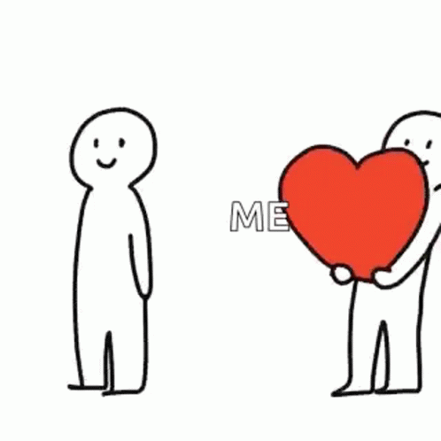

Handle Rejection in Love
"It's so hard to forget pain, but it's even harder to remember sweetness. We have no scar to show for happiness. We learn so little from peace."
Why is it important to respect others' decisions in matters of love?

Respecting others' decisions in love is essential for maintaining healthy relationships and personal dignity. It acknowledges individuals' autonomy, fostering mutual respect and open communication. By accepting rejection with grace, emotional well-being is preserved, allowing for personal growth and resilience. Respecting decisions upholds healthy boundaries, ensuring relationships are based on consent and genuine feelings. Ultimately, it nurtures positive interactions and contributes to a mature, respectful approach to matters of the heart.
Mr. Bean, once said
- “Never beg for a relationship or friendship with anyone. If you don’t receive the same efforts you give. Cut them off”
- “walk away from people and situations that threaten your peace of mind, self respect, values, morals, or self worth”